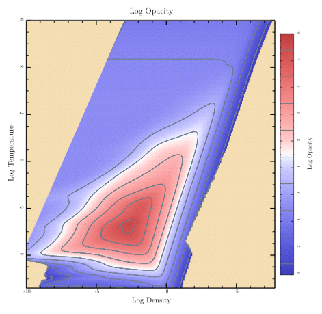
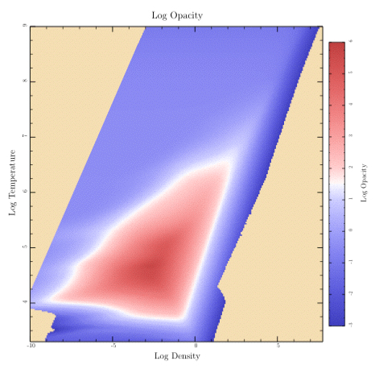

module Tioga::Tutorial::SampledData
Making plots showing sampled data as a false-color image¶ ↑
Let's finish “plots.rb” with a look at the code that shows a sampled data array with contours. (By the way, the data comes from an astrophysical calculation. The temperatures are in Kelvin and the densities are in grams per cubic centimeter. The array of data gives the calculated opacity for each temperature and density. Typical stars have conditions covered by the data.)

This is a more complex example than we've done before, so the amount of code will be correspondingly larger. We'll actually start with a somewhat simpler case by doing the plot without contours. Then we'll look at the code for adding contour lines.

Here's the top-level routine for this plot:
def sampled_data t.rescale(0.8) title = 'Log Opacity' t.subplot('right_margin' => @image_right_margin) { sampled_image(title) } t.subplot('left_margin' => 0.95, 'top_margin' => 0.05, 'bottom_margin' => 0.05) { color_bar(title) } end
It pulls in the right margin and shows the image, then pulls in the other margins and shows the color bar. Let's look at the “sampled_image” routine first.
def sampled_image(title) t.do_box_labels(title, 'Log Density', 'Log Temperature') data = get_press_image xs = @eos_logRHOs ys = @eos_logTs t.show_plot([@eos_xmin, @eos_xmax, @eos_ymax, @eos_ymin]) do t.fill_color = Wheat t.fill_frame clip_press_image t.show_image( 'll' => [xs.min, ys.min], 'lr' => [xs.max, ys.min], 'ul' => [xs.min, ys.max], 'color_space' => t.mellow_colormap, 'data' => data, 'value_mask' => 255, 'w' => @eos_data_xlen, 'h' => @eos_data_ylen) end end
After showing the title and labels, it calls the “get_press_image” routine in “plots.rb” to read the data and save it in various local attributes such as “@eos_logRHOs” and “@eos_logTs”. It also calls the FigureMaker create_image_data routine to convert the samples to a form that is understood by show_image.
def get_press_image @eos_xmin = -8.5; @eos_xmax = 2.5 @eos_ymin = 5.7; @eos_ymax = 7.0 @image_zmin = -3 @image_zmax = 6 data = Dvector.read("data/logRHOs_for_EoS.data") @eos_logRHOs = data[0] @eos_data_xlen = @eos_logRHOs.size @eos_xmin = @eos_logRHOs.min; @eos_xmax = @eos_logRHOs.max data = Dvector.read("data/logTs_for_EoS.data") @eos_logTs = data[0] @eos_data_ylen = @eos_logTs.size @eos_ymin = @eos_logTs.min; @eos_ymax = @eos_logTs.max @opacity_data = Dtable.new(@eos_data_xlen, @eos_data_ylen) @opacity_data.read("data/Opacity_EoS.data") return t.create_image_data( @opacity_data, 'min_value' => @image_zmin, 'max_value' => @image_zmax, 'masking' => true) end
Before calling show_image, we set up a clipping region in our routine, cllp_press_image. This takes care of the upper left corner where we don't have valid data. (Our equation of state code doesn't need to handle those combinations of temperature and density for our stellar models.)
def clip_press_image t.move_to_point(t.bounds_left, t.bounds_bottom) t.append_point_to_path(t.bounds_left, 4.2) t.append_point_to_path(-3, t.bounds_top) t.append_point_to_path(t.bounds_right, t.bounds_top) t.append_point_to_path(t.bounds_right, t.bounds_bottom) t.close_path t.clip end
That takes care of the image of the sampled data. Now let's add the color bar.
def color_bar(ylabel, levels = nil) xmin = 0; xmax = 1; xmid = 0.5 t.rescale(0.8) t.xaxis_type = AXIS_LINE_ONLY t.xaxis_loc = BOTTOM t.top_edge_type = AXIS_LINE_ONLY t.yaxis_loc = t.ylabel_side = RIGHT t.yaxis_type = AXIS_WITH_TICKS_AND_NUMERIC_LABELS t.left_edge_type = AXIS_WITH_TICKS_ONLY t.ylabel_shift += 0.5 t.yaxis_major_tick_length *= 0.6 t.yaxis_minor_tick_length *= 0.5 t.show_ylabel(ylabel); t.no_ylabel t.show_plot('boundaries' => [xmin, xmax, @image_zmax, @image_zmin]) do t.axial_shading( 'start_point' => [xmid, @image_zmin], 'end_point' => [xmid, @image_zmax], 'colormap' => t.mellow_colormap ) if levels != nil t.stroke_color = Gray t.line_width = 1.5 levels.each { |level| t.stroke_line(xmin, level, xmax, level) } end end end
The colors are painted by the axial_shading routine. The rest of the code is setting up the axes to give the appearance I happen to like.
Finally, here's the plot routine that includes contour lines.
def samples_with_contours t.rescale(0.8) title = 'Log Opacity' levels = Array.new (-3..5).each { |i| levels << i + 0.4 } t.subplot('right_margin' => @image_right_margin) { sampled_image(title) } t.subplot('left_margin' => 0.95, 'top_margin' => 0.05, 'bottom_margin' => 0.05) { color_bar(title, levels) } t.subplot('right_margin' => @image_right_margin) do t.xaxis_type = t.yaxis_type = AXIS_WITH_TICKS_ONLY t.no_title; t.no_xlabel; t.no_ylabel bounds = [@eos_xmin, @eos_xmax, @eos_ymax, @eos_ymin] t.show_plot(bounds) do clip_press_image t.stroke_color = SlateGray t.line_width = 1 dest_xs = Dvector.new; dest_ys = Dvector.new; gaps = Array.new dict = { 'dest_xs' => dest_xs, 'dest_ys' => dest_ys, 'gaps' => gaps, 'xs' => @eos_logRHOs, 'ys' => @eos_logTs, 'data' => @opacity_data } levels.each do |level| dict['level'] = level t.make_contour(dict) t.append_points_with_gaps_to_path(dest_xs, dest_ys, gaps, true) t.stroke end end end end
The first thing it does is show the image and the colorbar. Next, it sets up to do a plot with exactly the same frame and bounds as the image, and then adds the contour lines. Each line is created by the make_contour routine and then painted by appending it to the path and calling stroke. Since the contour line for particular level may come in many disconnected pieces, we use the “append_points_with_gaps_to_path” routine which knows how to deal with such things.
BTW: If you're looking for the routine to add labels to contours automatically, you won't find it in tioga. I've never been particularly pleased with the job done by standard algorithms. Instead, I decided to go at the problem in a different way and give you the actual contour data in a form that you can work with to make your own choices. This also means you can try using different line styles for different contour levels, and perhaps you might even want to use a legend to identify the levels if there aren't too many.
Of course, if someone develops a great algorithm for doing contour labels, they can package it up as a Ruby extension and let us all share. I'd love to see that happen, and Ruby is a great platform for it.